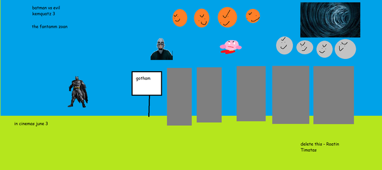
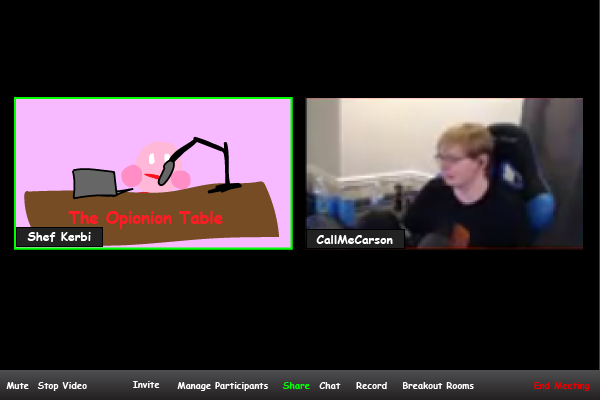
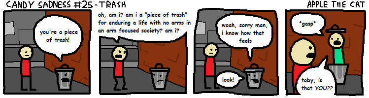

Episode 43
May 6th, 2020
Back to News Archive
| Back to Homepage | Back to Shef Werld<< Previous Episode | >> Next Episode

"We skipped the month of April ha april fools"
$5.00 | ~8 ghost dollars | ⭐25 coins
Does not include potential cost from surprise mechanics (they're not lootboxes so it's not illegal!!!), purchases from Shef Kerbi's Apparel or preordering the Special Edition
-------------------------
ANNOUNMENT - SHEF WERLD HACKED
On March 31st 2020, Shef Werld headquarters was broken into by a small group of people and what appears to be a cat(?). They proceeded to access Shef Werld's internal servers and release a bunch of internal information throughout the month of April. We do believe that they have only decided to release information that would be the most negatively impactful to our company however, which includes but is not limited to:
- A promotional poster for a Shef Kerbi/Kawsaki tour due to happen on March 2019 that was cancelled[2]
- A screenshot of Carmes ads folder [3]
Also, Shef Werld no longer has access to the CatsUnited Scratch account as it appears that the thieves also gained information that allowed them access to that account, with an apparent intention of doing that to "bring the CatsUnited account back to the right hands".
APPLE'S TECHNOLOGY AND DESIGN CORNER: Episode 13
The water gun emoji has been deemed "too violent" for children. Alternatives such as rubber ball, poop thinking emoji, and salad without egg have all been considered. Additionally, they've just found out that you can use a knife to stab people. What this means for the knife emoji is unclear. Yes, the Unicode protests have ended. No, there was no resolution, the internet just found something else to complain about.
Applez Techz Reviewz: iPhone 12!
Never mind. Apple has filed a stop and stop ordered against Apple so he would stop making dumb apple jokes.
UNIVERSE CHANGE LOG 1.8.3e
The universe was recently updated to version 1.8.3e. Here is the change log:
CHANGES
- Added a third Pluto
- Removed alien
- Frogs now have access to the diplomacy skill tree after popular request
- Changed to a new rendering engine
- Slightly increased the height of Keyn DDDD's hit box
- Slightly nerfed orange juice tastiness
- Accidentally removed orange juice
- Accidentally replaced orange juice with angry bears
- Added bear fighting arena
- Decreased chicken sight radius
BUG FIX
COVID-19 QUARANTINE CAUSES HEADLINE PRICES TO DROP SIGNIFICANTLY
If you don't know what COVID-19 is, you've probably been living under a rock. A very safe, COVID-19-free rock. Can I live under that rock?
ANIME CHARACTER OUTFIT FOUND IN RANDOM PEOPLE'S WARDROBES
A weird anime character costume has been found in random wardrobes, including Shef Kerbi's. This is a mockup of Shef Kerbi's hypothetical wife wearing it:
As you can see, it is very weird. There are rumours that Anime Cosmetics Inc's co-CEO, PreCure Selene (who if you don't know, was teleported from her own universe to Dreem Lend and later founded Anime Cosmetics Inc, now part of Carmes Inc) put them in the wardrobes, as several bottles of toothpaste were found in those same wardrobes.
We interviewed PreCure Selene over the outfits. This is what she replied:
はい、着るのはすごいです！それに歯磨き粉を入れるとさらに良くなります！わーい！
Unfortunately, we dropped the piece of paper with the translation on right into Mount Ebott, so if you want to understand what PreCure Selene is saying, just use Google Translate.
IMPOSTOR BON STARBUCKLE SEEN ROAMING DREEM LEND
The imposter of Bon Starbuckle, now known informally as "Bon Tabuckle", is still on the loose. After the two murders, Tabuckle escaped the SKNN building and became a wanted criminal. Two days ago, the epic sandwich building in the area of the intersection of Broadway and King Street in Burlington was destroyed. Security camera footage shows that Tabuckle unscrewed a screw in the bottom floor of the building, causing it to go crash. Thankfully, most workers were already ghosts from the previous incident, and the two workers who were not ghosts were outside eating KFC during the event. There is currently a $5 bounty on Bon Tabuckle, but if you avoid catching them for a while, they might raise the payment
CHUNK OF DREEM LEND MISSING
A large chunk of Vegtables Hulk Valley has gone missing, all that is left is the default Pop Stah missing texture thing (not the one from Mehn Creft). 200 residents dissapeared as well.
Also, the studio that brought Batman vs Evil Kumquats is making another sequel! They need ideas of which evil people from Dreem Lend are to be shown to invade with the kumquats who come from the Fantamm Zoan. The movie is to include actors dressed up as them (the real ones are either destroyed or will destroy the movie).
Per the 2020 Guiness Book of Popp Stah Laws, Keyn DDDD cannot be an antagonist in the film, so do not suggest him.
This is the poster right now:

Baika Kerbi and Thing 1 are already shown in the movie.
BREAKING NEWS
A hoard of zombies has taken to the streets of Dreemlend, demanding to consume the flesh of news reporters everywhere. What they don't realize, however, is that the only flesh they're getting from THIS reporter is made out of BULLETS.
BANG BANG!
PEW PEW PEW!
RATATATATATATA!
Now I don't wanna give my own opionion but...
OPIONION WITH SHEF KERBI
Who the hell are the Phantom Thieves and why did they steal my Scratch account
Despite these tough times, we've managed to figure out a way to continue the Opionion column. Shef Werld originally set up The Opionion Table at Kerbi City's Central Square, unfortunately due to Planet Popstah ending[citation needed], we have instead decided to set up a call on Zoom to let people put their opionions in. Here is an example with minerman17 CallMeCarson:

First up on our Zoom call is axal22, who said:
"why does the universe keep on updating smh it's ruined now. Where's my old school universe?"
I did see a petition someone set up to convince the devs to make an old school server where the world was at version 1.7 due to the overall high reception that iteration of the universe received. Apparently it has "dinosaurs", but I haven't checked myself.
sonichegehog said:
"Hey there kid! Have you ever listened to the soundtrack for the game Sonic R for the Sega Saturn??™™"
Sonic R's soundtrack is something else. Makes me wish that there were more than like 6 songs but oh well
rejboy10 wrote:
Can you play Jackbox Party Pack on stream?
Drop some suggestions for which one we should play - I've been thinking of playing Party Pack 3 mainly because Tee KO is so fun lol
Tune in every Wednesday and Friday evenings if you would like to express your opionion on our Zoom call. We'll also be providing some entertainment such as gameplay and video reactions live. If you donate 100 bits you'll get a special emote to use on all our zoom calls.
----------------
COMIX
by Apple the Cat and Carmes


"Batman"

ACTIVITIES
by CrazeePi's Disembodied Voice, Carmes and Apple the Cat
The answer to the corrupted image activity is Mexican Ghost Dad from Issue 3
Weather 2
so uhh, today it's going to be 13 degrees maximum and 14 degrees minimum tomorrow it's going to i have no idea what i'm doing help?!?
{kind=link}
THANK YOU FOR WATCH. PLEASE TUN E IN NEXT TIME FOR MORE NESW

Shef Kerbi News Network follows the guidelines and conventions set by the 1984 High Quality News Act of Dreem Lend, which states
that any news published is to be of a high quality, is to remain unbiased and to show all sides of a news report, does not attack anyone, and protects the privacy
of people whose identities don't want to be revealed.
If you would like to file a complaint regarding content use, please message SKNN through our Scratch account. We also have a Twitter and Instagram account if you
prefer.
Shef Kerbi News Network respects the ancestors of Cappy Town, and understands that they are the reason why Dreem Lend exists.
Shef Kerbi News Network is proud to be a subsidiary of Shef Werld
this website is best viewed with Ned's Escape